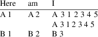
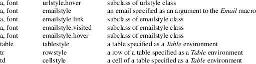

Latex2man is a tool to translate UNIX manual pages written with LaTeXinto a format understood by the UNIX man(1)−command. Alternatively HTML, TexInfo, or LaTeX code can be produced too. Output of parts of the text may be suppressed using the conditional text feature (for this, LaTeX generation may be used).
latex2man [−ttransfile] [−cCSSfile] [−HMTL] [−h] [−V] [−Cname] [−achar] infile outfile
Latex2man reads the file infile and writes outfile. The input must be a LaTeX document using the latex2man LaTeXpackage. Latex2man translates that document into the troff(1) format using the −man macro package.
Using the −H option, HTML code can be produced, instead of troff(1). With this option you can, optionally, specify a CSSfile as an argument. CSS (Cascading Style Sheets) allows you to control the appearance of the resulting HTML page. See below for the names of CSS classes that are included in the HTML tags as attributes.
Using the −T option, TexInfo code can be produced, instead of troff(1).
Using the −M option, troff(1) input is produced.
Using the −L option, LaTeX ouput can be produced, instead of troff(1).
−ttransfile
Translation for user defined LaTeX macros.
−cCSSfile
If you use the −H you can also specify a file that contains CSS style sheets. The link to the CSS file is inserted into the generatedHTML output using the specified CSSfile filename.
|
−M |
Produce output suitable for the man(1) command (default). | ||
|
−H |
Instead of producing output suitable for the man(1) command, HTML code is produced (despite the name of the command). | ||
|
−T |
Instead of producing output suitable for the man(1) command, TexInfo code is produced (despite the name of the command). The generated .texi−file may be processed with makeinfo(1) (to produce an .info−file) which in turn may be installed using install−info(1). The Info tags @dircategory and @direntry are provided. | ||
|
−L |
The LaTeX source is written to the outfile. This is useful in conjunction with the −Cname option. | ||
|
−Cname |
Output the conditional text for name. If more than one name should be given use quotes: −C’name1 name2 ...’ |
The following names are defined automatically:
|
* |
−H defines HTML |
||
|
* |
−T defines TEXI |
||
|
* |
−M defines MAN |
||
|
* |
−L defines LATEX |
||
|
−achar |
Is used only in conjunction with −T. |
Background:
TexInfo ignores all blanks before the first word on a new
line. In order to produce some additional space before that
word (using \SP) some character has to be printed before the
additional space. By default this is a . (dot). The
char specifies an alternative for that first
character. Giving a blank to −a supresses the
indentation of a line.
Note: only for the first \SP of a series that char is
printed.
|
−h |
Show a help text. |
|||
|
−V |
Show version information. |
latex2man.tex
The LaTeX file containing this Man−page.
latex2man.inc
A file read with \input{..} .
latex2man.sty
The LaTeX package defining the environments and commands.
latex2man.cfg
The configuration file for Latex2man LaTeX−package.
latex2man.css
File containing example CSS definitions.
latex2man.trans
File containing example translations of user defined LaTeX macros.
fancyheadings.sty
A LaTeX package used to typeset head− and foot lines.
fancyhdr.sty
A LaTeX package used to typeset head− and foot lines.
rcsinfo.sty
A LaTeX package used to extract and use RCS version control information in LaTeX documents.
latex2man.pdf
The PDF version of this document.
LaTeX,TexInfo, troff(1), groff(1), makeinfo(1).
The LaTeX package latex2man is used to write the Man−pages with LaTeX.Since we translate into other text formats, not all LaTeX stuff can be translated.
PACKAGE
OPTIONS
The latex2man package accepts the following options:
|
fancy |
use the LaTeX package fancyheadings. |
fancyhdr
use the LaTeX package fancyhdr.
nofancy
neither the LaTeX package fancyheadings nor fancyhdr are used.
The default option may be specified in the file latex2man.cfg.
PACKAGE
SPECIFIC ENVIRONMENTS
The following environments are provided by the package:
\begin{Name}{chapter}{name}{author}{info}{title}
The Name environment takes five arguments: 1. the Man−page chapter, 2. the name of the Man−page, 3. the author, 4. some short information about the tool printed in the footline of the Man−page, and 5. a text which is used as title, for HTML and LaTeX (it’s ignored for output of the Man−page or TeXinfo. The Name environment must be the first environment in the document. Processing starts with this environment. Any text before this is ignored (exception: the setVersion and setDate commands). (Note: all arguments of \begin{Name} must be written on one line).
\begin{Table}[width]{columns}
The Table environment takes two arguments: the first optional one specifies a width of the last column, the second one gives the number of columns. For example:
\begin{Table}[2cm]{3}
Here & am & I \\\hline
A 1 & A 2 & A 3 1 2 3 4 5 A 3 1 2 3 4 5 \\
B 1 & B 2 & B 3 \\
\end{Table}
will be typeset as:

If no optional width argument is given, all entries are typeset left justified. The width is a length measured absolutly in cm. Processing with LaTeX a p{width} column is typeset as last column. The translation to troff(1) commands results in a lw(width) column specification. Translating to HTML and TexInfo ignores the width parameter.
\hline may be used.
If the
Man−page is formatted with troff(1) and tables
are used, the tbl(1) preprocessor should be called,
usually by giving a −t to the call of
troff(1). When viewing the generated manula page
using man(1), tbl(1) is called automatically.
\begin{Description}
is the same as \begin{description}
\begin{Description}[label]
is similar to \begin{description}, but the item labels have at minimum the size of the (optional) word label. The difference is visible only in the DVI and PDF−output, not in the troff, TexInfo or HTML output.
|
a |
|a \begin{description} |
|||
|
ab |
|ab |
|||
|
abc |
|abc |
|||
|
a |
|a \begin{Description} |
|||
|
ab |
|ab |
|||
|
abc |
|abc |
|||
|
a |
|a \begin{Description}[aa] |
|||
|
ab |
|ab |
|||
|
abc |
|abc |
ACCEPTED
LaTeX ENVIRONMENTS
The following environments are accepted:
|
* |
description |
|||
|
* |
enumerate |
|||
|
* |
itemize |
|||
|
* |
verbatim |
|||
|
* |
center |
They may be nested:
|
* |
Itemize and nested center: |
A centered line.
Another centered line.
|
* |
Another item an nested enumerate |
1.
|
a |
||||
|
2. |
b |
PACKAGE
SPECIFIC MACROS
The following commands are provided:
\Opt{option}
Option: \Opt{−o} will be typeset as −o.
\Arg{argument}
Argument: \Arg{filename} will be typeset as filename.
\OptArg{option}{argument}
Option with Argument:
\OptArg{−o}{filename} will be typeset as
−ofilename.
\OptoArg{option}{argument}
Option with optional Argument:
\OptoArg{−o}{filename} will be typeset as
−o[filename].
\oOpt{option}
Optional option, e.g. \oOpt{−o} will be typeset as [−o].
\oArg{argument}
Optional argument, e.g. \oArg{filename} will be typeset as [filename].
\oOptArg{option}{argument}
Optional option with argument,
e.g.
\oOptArg{−o}{filename} will be typeset as
[−ofilename].
\oOptoArg{option}{argument}
Optional option with optional
argument, e.g.
\oOptoArg{−o}{filename} will be typeset as
[−o[filename]].
\File{filename}
used to typeset filenames, e.g. \File{filename} will be typeset as filename.
\Prog{prog}
used to typeset program names, e.g. \Prog{latex2man} will be typeset as latex2man.
\Cmd{command}{chapter}
used to typeset references to
other commands, e.g.
\Cmd{latex2man}{1} will be typeset as
latex2man(1).
|
\Bar |
is typeset as |. |
|||
|
\Bs |
(BackSlash) is typeset as \. |
|||
|
\Tilde |
is typeset as a ~. |
|||
|
\Dots |
is typeset as ... |
\Bullet
us typeset as *.
\setVersion{..}
set .. as version information.
\setVersionWord{..}
set .. for the word
Version: in the footline.
The default is \setVersionWord{Version:}.
\Version
returns the version information.
\setDate{..}
sets .. as date information.
|
\Date |
returns the date information. |
\Email{..}
use to mark an Email address:
\Email{Juergen.Vollmer@informatik−vollmer.de} is
typeset as:
Juergen.Vollmer@informatik−vollmer.de.
\URL{..}
use to mark an URL:
\URL{http://www.foo.de/\Tilde vollmer} is typeset as
http://www.foo.de/~vollmer.
\LatexManEnd
the input file is read and
processed until reading end−of−file or
\LatexManEnd (at the beginning of a line). LaTeXignores this
command.
\Lbr, \Rbr
is typeset as [ and ] (these
variants are needed only somtimes like in
\item[FooBar\LBr xx \Lbr]. Usually [ ] will work.
\LBr, \RBr
is typeset as { and } (these variants are needed when using { or } as arguments to macros.
\Circum
is typeset as ^.
\Percent
is typeset as %.
|
\TEXbr |
If processed with LaTeX causes a linebreak (i.e. is equivalent to \\).In the output of latex2man this macro is ignored. |
\TEXIbr
If TexInfo output is generated, causes a linebreak (i.e. is equivalent to \\),otherwise ignored.
|
\MANbr |
If Man−Page output is generated, causes a linebreak (i.e. is equivalent to \\),otherwise ignored. |
\HTMLbr
If HTML output is generated, causes a linebreak (i.e. is equivalent to \\),otherwise ignored.
\medskip
An empty line.
|
\SP |
Produces some extra space, works also at the beginning of lines. The code of the second line looks like: \SP abc \SP\SP xx\\: |
abc xx
abc xx
abc xx
Note: Due to some ‘‘problems’’ with TexInfo, the lines starting with \SP have a leading . (dot) in the TexInfo output, see −achar.
ACCEPTED
MACROS FROM THE RCSINFO PACKAGE
\rcsInfo $Id ...$
if the LaTeX package rcsinfo is used, this command is used to extract the date of the Man−page.
\rcsInfoLongDate
if the LaTeX package rcsinfo is used, this command is used to typeset the date coded in the $Id ..$ string.
ACCEPTED
LaTeX MACROS
The following standard LaTeX commands are accepted:
\section{..}
The section macro takes one argument: the name of the Man−page section. Each Man−page consists of several sections. Usually there are the following sections in a Man−page: Name (special handling as environment, c.f. above), Synopsis, Description, Options, Files, See Also, Diagnostics, Return Values, Bugs, Author, version, etc.
Synopsis must be the first section after the Name environment.
Note: Do not
use LaTeX−macrosin section names.
\subsection{..}
works as well as
\subsubsection{..}
those.
\emph{..}
\emph{example} is typeset as example.
\textbf{..}
\textbf{example} is typeset as example.
\texttt{..}
\texttt{example} is typeset as example.
\underline{..}
\underline{example} is typeset as example of underline .
\date{..}
uses .. as date.
\verb+..+
but only + is allowed as delimiter.
$<$ is typeset as <.
$>$ is typeset as >.
$<=$ is typeset as <=.
$>=$ is typeset as >=.
$=$ is typeset as =.
$<>$ is typeset as <>.
|
$\ge$ |
is typeset as $>=$. |
|||
|
$\le$ |
is typeset as $<=$. |
$\leftarrow$
is typeset as $<--$.
$\Leftarrow$
is typeset as $<==$.
$\rightarrow$
is typeset as $-->$.
$\Rightarrow$
is typeset as $==>$.
\{ is typeset as {.
\} is typeset as }.
\$ is typeset as $.
\$ is typeset as $,should be used inside macro
arguments.
\_ is typeset as _.
\& is typeset as &.
\# is typeset as #.
\% is typeset as %.
|
\, |
is typeset as smaller blank − − (between the two −) | ||
|
\− |
is used to mark hyphenation in a word. |
\\ is typeset as a linebreak or marks the end of a column in the
Table environment.
\ (a \ followed by a blank) is typeset as a blank,
although it cannot be used at the beginning of a line to make indentation (see the \SP command).
~ is typeset as a blank.
\copyright
is typeset as (C).
\noindent
|
\hline |
inside a Table environment. | ||
|
\item |
inside a itemize, enumerate, or description environment. | ||
|
\today |
25 November 2018(see also the rcsinfo LaTeXpackage). |
\ss,\"a, ...
\ss = ß, \"a=
ä, \"o= ö, \"u= ü, \"A=
Ä, \"O= Ö, \"U= Ü. It is allowed to
surround these macros in { and } in all places, even inside
other macros, e.g.
\textbf{\"a\"o\"u\"A\"O\"U\ss}
\textbf{\"a}{\"o}{\"u}{\"A}{\"O}{\"U}{\ss}}
\textbf{äöüÄÖÜß}
äöüÄÖÜß äöüÄÖÜß äöüÄÖÜß
If these
letters are used in their LATIN−1 8−bit coding,
they are translated into the equivalent letter of the
desired output format. E.g. Ä becomes Ä in
HTML and @"A in texinfo.
\input{..}
Read and process the given filename.
Please note: the name of the LaTeX−macrosand its arguments must be contained in one line.
CONDITIONAL
TEXT
latex2man preprocesses the LaTeX input to allow text to be
used conditionally. A special sort of LaTeX comment is used
for that purpose.
|
* |
%@% IF condition %@% |
|||
|
* |
%@% ELSE %@% |
|||
|
* |
%@% END−IF %@% |
A line must contain only such a comment and nothing else. condition is a boolean expression containing ‘‘names’’ and operators. The names given with the −Cname option have the value ‘‘true’’, while all other names occuring in the expression are assumed to be ‘‘false’’. If the evaluation of the boolean expression results in the value ‘‘true’’, the text in the ‘‘then’’−part is used and the text in the optional ‘‘else’’−part is skipped (and vice versa). The IF/ELSE/END−IF may be nested. As boolean operators the following are allowed:
( and ) for grouping are allowed.
For example:
%@% IF abc %@%
abc set
%@% IF xyz %@%
xyz set
%@% ELSE %@%
xyz NOT set
%@% END−IF %@%
%@% ELSE %@%
abc NOT set
%@% IF xyz || !XYZ %@%
xyz OR !XYZ set
%@% ELSE %@%
xyz OR !XYZ NOT set
%@% END−IF %@%
%@% END−IF %@%
Run this manual
page through latex2man with e.g.
−C’abc XYZ’ and have a look
to the generated output. (If simply running the
LaTeX−document through LaTeX,all lines are shown in
the .dvi file).
abc NOT set
xyz OR !XYZ set
To check the conditional text feature, when latex2man is called with
|
−CHTML |
the lines 1a, 2b, 3b, and 4b; |
|||
|
−CTEXI |
the lines 1b, 2a, 3b, and 4b; |
|||
|
−CMAN |
the lines 1b, 2b, 3a, and 4b; |
−CLATEX
the lines 1b, 2b, 3b, and 4a;
calling LaTeX without preprocessing
all lines
should be shown:
1b. The HTML conditional was not set.
2b. The TEXI conditional was not set.
3a. This text occurs only when viewing the MAN output
4b. The LATEX conditional was not set.
TRANSLATION
OF USER DEFINED MACROS
The user macro translation file (given by the
[−ttransfile]) contains Perl commands
specifying the translation of LaTeX macros defined by the
user. These macros may have none, one or two arguments. The
following code is expected:
|
* |
Comments start with a # up to the end of the line. | ||
|
* |
For a macro \foo with no arguments, the following code must be specified: |
Translation to Man−Pages
$manMacro{’foo’} = ’...’;
Translation to HTML
$htmlMacro{’foo’} = ’...’;
Translation to TexInfo
$texiMacro{’foo’} = ’...’;
where ... is the translation.
|
* |
For a macro \foo{..} with one argument, the following code must be specified: |
Translation to Man−Pages
$manMacro1a{’foo’}
= ’...’;
$manMacro1b{’foo’} = ’...’;
Translation to HTML
$htmlMacro1a{’foo’}
= ’...’;
$htmlMacro1b{’foo’} = ’...’;
Translation to TexInfo
$texiMacro1a{’foo’}
= ’...’;
$texiMacro1b{’foo’} = ’...’;
where ... is the translation. The 1a code is used before the argument, while 1b is typeset after the argument is set.
|
* |
For a macro \foo{..}{..} with two arguments, the following code must be specified: |
Translation to Man−Pages
$manMacro2a{’foo’}
= ’...’;
$manMacro2b{’foo’} = ’...’;
$manMacro2c{’foo’} = ’...’;
Translation to HTML
$htmlMacro2a{’foo’}
= ’...’;
$htmlMacro2b{’foo’} = ’...’;
$htmlMacro2c{’foo’} = ’...’;
Translation to TexInfo
$texiMacro2a{’foo’}
= ’...’;
$texiMacro2b{’foo’} = ’...’;
$texiMacro2c{’foo’} = ’...’;
where ... is the translation. The 2a code is used before the first argument, 2b between the two arguments and 2c is typeset after the second argument is set.
|
* |
The file latex2man.trans contains some example code. |
VERBATIM
ENVIRONMENT
This
{is}
\texttt{a}
$test$
_of_
verbatim
<this is no HTML tag> and no @* TexInfo command
SUBSECTION
WORKS
This is a \subsection.
Subsubsection
works
This is a \subsubsection.
Subsubsection
still works
This is another \subsubsection.
GENERAL REMARKS
|
1. |
Empty lines are typeset as paragraph separators. | ||
|
2. |
The arguments of the LaTeX commands must not be split over several lines. | ||
|
3. |
Do not nest calls to macros. | ||
|
4. |
Except the mentioned environment and macros, the usage of other LaTeX environments or macros are not translated. Their usage will cause garbage in the output. | ||
|
5. |
latex2man requires Perl version >= 5.0004_03. | ||
|
6. |
If you want to install the system with the distributed Makefile, you need GNU−make. If you don’t have it, you should execute the steps shown in the Makefile manually. |
The table below shows the names of CSS classes that will be included in the HTML tags as attributes. You can specify the CSS style properties in the CSSfile for these classes:

Leading . and ’
Now leading . and ’ in
generation troff output should work propperly, since a
\& is added. Therfore the \Dot macro has been deleted.
Thanks to
Frank.Schilder@Mathematik.Tu−Ilmenau.De.
Testcase 1:
|
’\n’ |
... |
Testcase 2:
.foobar Testcase 3:
...
abc ... abc . efg ’ 123
%in verbatim
A % in a \verb and verbatim−environment was not emitted correctly. Thanks to Aleksey Nogin nogin@cs.caltech.edu for the bug report and bug fix.
% abc
% abc %
but ignore comments following this:
|
Perl |
latex2man requires Perl version >= 5.0004_03. | ||
|
Make |
If you want to install the system with the distributed Makefile, you need GNU−make. If you don’t have it, you should execute the steps shown in the Makefile manually. |
LaTeX LaTeX2e is required.
Please check the file latex2man−CHANGES for the list of changes and acknowledgment to people contributing bugfixes or enhancements.
Version: 1.29 of 2018/11/25.
Copyright
(C)1998, Dr. Jürgen
Vollmer, Am Rennbuckel 21, D−76185 Karlsruhe, Germany,
Juergen.Vollmer@informatik−vollmer.de
The most recent
version of Latex2man may be found on my homepage
http://www.informatik−vollmer.de/software/latex2man.html.
License
This program can be redistributed and/or modified under the terms of the LaTeX Project Public License Distributed from CTAN archives in directory macros/latex/base/lppl.txt; either version 1 of the License, or any later version.
|
Misc |
If you find this software useful, please send me a postcard from the place where you are living. |
Dr. Jürgen
Vollmer
Am Rennbuckel 21
D−76185 Karlsruhe
Email: Juergen.Vollmer@informatik−vollmer.de
WWW: http://www.informatik−vollmer.de.